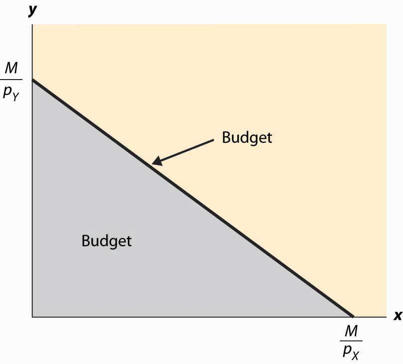
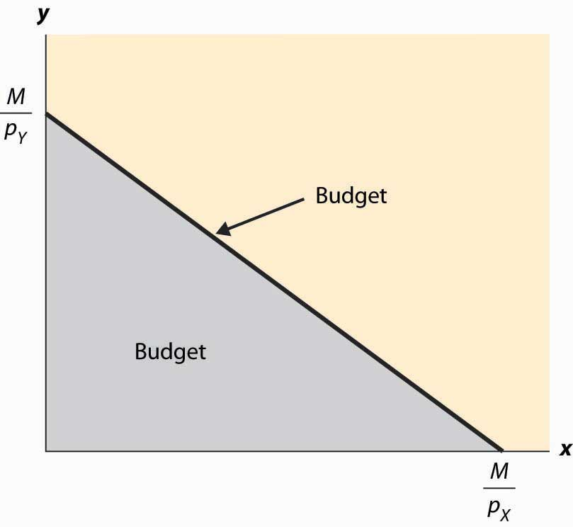
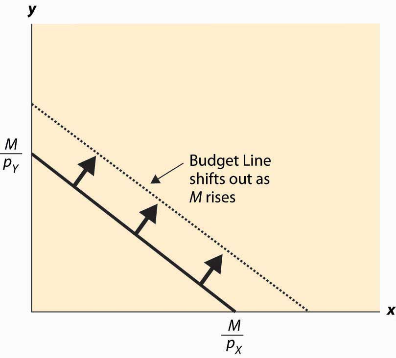

Suppose that a consumer has a fixed amount of money to spend, M. There are two goods X and Y, with associated prices pX and pY. The feasible choices that the consumer can make satisfy In addition, we will focus on consumption and rule out negative consumption, so x ≥ 0 and y ≥ 0. This gives a budget setSet of goods a consumer can afford. or feasible set, as illustrated in Figure 12.1 "Budget set". The budget set is the set of goods a consumer can afford to purchase.
The budget lineSet of goods that just exhaust the consumer's budget. is the boundary of the budget set, and it consists of the goods that just exhaust the consumer’s budget
Figure 12.1 Budget set
In Figure 12.1 "Budget set", the feasible set of purchases that satisfies the budget constraint is illustrated with shading. If the consumer spends all of her money on X, she can consume the quantity x = Similarly, if she spends all of her money on Y, she consumes units of Y. The straight line between them, known as the budget line, represents the most of the goods that she can consume. The slope of the budget line is
An increase in the price of one good pivots or rotates the budget line. Thus, if the price of X increases, the endpoint remains the same, but falls. This is illustrated in Figure 12.2 "Effect of an increase in price on the budget".
Figure 12.2 Effect of an increase in price on the budget
The effect of increasing the available money M is to increase both and proportionately. This means that an increase in M shifts the budget line out (away from the origin) in a parallel fashion, as shown in Figure 12.3 "An increase in income".
Figure 12.3 An increase in income
An increase in both prices by the same proportional factor has an effect identical to a decrease in income. Thus, one of the three financial values—the two prices and income—is redundant. That is, we can trace out all of the possible budget lines with any two of the three parameters. This can prove useful. We can arbitrarily set pX to be the number one without affecting the generality of the analysis. When setting a price to one, that related good is called the numeraireA good used as a reference good, so that prices are denominated in units of that good., and essentially all prices are denominated with respect to that one good.
A real-world example of a numeraire occurred when the currency used was based on gold, so that the prices of other goods were denominated in terms of the value of gold.
Money is not necessarily the only constraint on the consumption of goods that a consumer faces. Time can be equally important. One can own all of the compact disks in the world, but they are useless if one doesn’t actually have time to listen to them. Indeed, when we consider the supply of labor, time will be a major issue—supplying labor (working) uses up time that could be used to consume goods. In this case, there will be two kinds of budget constraints—a financial one and a temporal one. At a fixed wage, time and money translate directly into one another, and the existence of the time constraint won’t present significant challenges to the theory. The conventional way to handle the time constraint is to use, as a baseline, working “full out,” and then to view leisure as a good that is purchased at a price equal to the wage. Thus, if you earn $20 an hour, we would set your budget at $480 a day, reflecting 24 hours of work; but we would then permit you to buy leisure time, during which eating, sleeping, brushing your teeth, and every other nonwork activity could be accomplished at a price equal to $20 per hour.